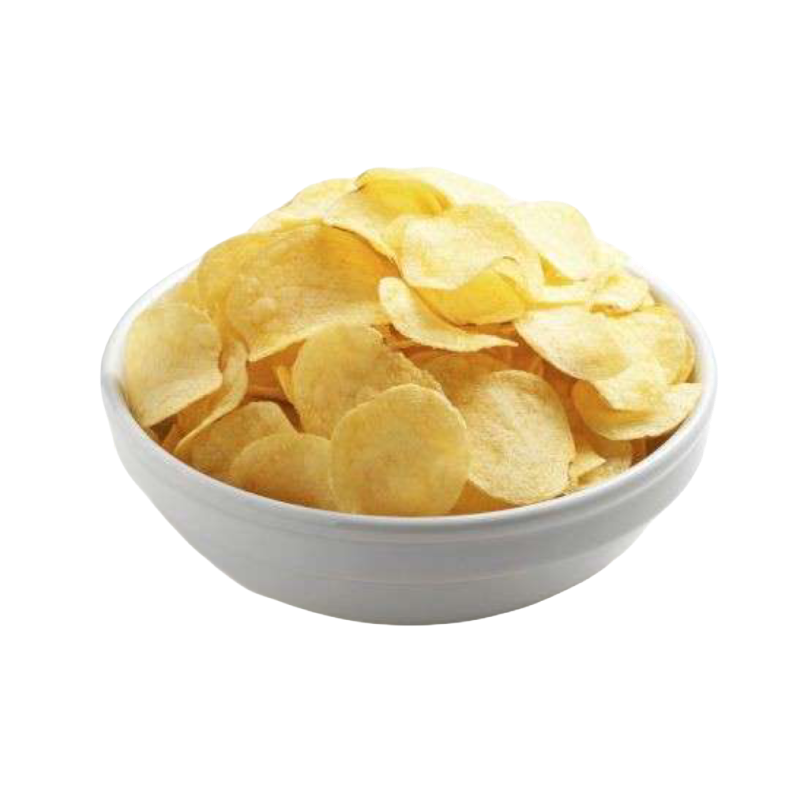

Potato Chips
INGREDIENTS
- 3 medium potatoes
- Vegetable oil (for frying)
- Salt to taste
- Optional: paprika, garlic powder, or vinegar seasoning
WHAT TO DO
- Wash and thinly slice the potatoes using a mandoline or sharp knife.
- Soak slices in cold water for 30 minutes, then drain and pat dry.
- Heat oil in a deep pan over medium-high heat.
- Fry slices in batches until golden and crispy.
- Remove and drain on paper towels. Season while hot and serve.
Nutritional Facts
| Calories |
Protein |
Total Fat |
| 300 kcal |
4g |
20g |
